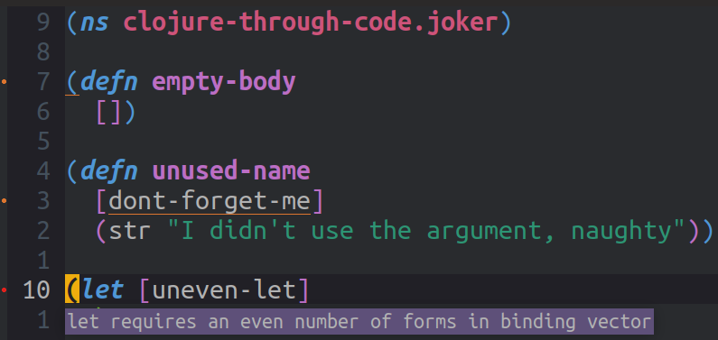

Joker
Adding clojure-lint layer breaks recommended linter
clj-kondo is the recommended linter for Clojure in Spacemacs. Adding the unofficial clojure-linter layer will break clj-kondo
Joker is a small Clojure interpreter and linter that can be used with the clojure-lint layer to give instant feedback on the code you are writing.

Joker indicates how many issues and warnings its generated and puts a red dot at the left of each line. Navigating the cursor to the underlined word or character will describe the issue.
Install Joker on your operating system
Install the Joker tool on your operating system so you can run the command joker -v successfully.
Download the latest binary release of Joker
Unzip the download and install the joker binary on the operating system path, eg.
unzip joker-0.10.2-linux-amd64.zip -d ~/binInstall via Homebrew on MacOSX
brew install candid82/brew/jokerAdd the syntax-checking layer
The flycheck package in the syntax-checking layer provides general syntax checking in Emacs and the flycheck-joker package in clojure-lint layer adds Clojure specific syntax rules.
Ensure the syntax-checking layer is enabled in .spacemacs
dotspacemacs-configuration-layers '(syntax-checking)
Clone the Joker layer to your Spacemacs configuration
The clojure-lint layer is not yet part of Spacemacs, so copy the layer into the private area of your local Spacemacs configuration
git clone https://github.com/n2o/clojure-lint-spacemacs-layer ~/.emacs.d/private/clojure-lint
Add clojure-lint layer
Edit the .spacemacs file and in the dotspacemacs/layers section, add the following line:
clojure-lint
Removing false positives
joker is not a complete Clojure parser, although its pretty close, so there can be some false reporting of errors (false positives).
Create a .joker file in your home directory and add known macros, namespaces, tags and rules to minimise these errors.
{:known-macros
[clojure.test.check.generators/let
rum.core/defc
rum.core/defcc
rum.core/defcs]
:known-namespaces
[clojure.string clojure.set]
:known-tags
[]
:ignored-unused-namespaces
[clojure.spec.alpha clojure.test]
:rules
{:if-without-else true
:no-forms-threading true}}
Below is the list of all configurable rules.
| Rule | Description | Default value |
|---|---|---|
if-without-else |
warn on if without the else branch |
false |
no-forms-threading |
warn on threading macros with no forms, i.e. (-> a) |
true |
unused-as |
warn on unused :as binding |
true |
unused-fn-parameters |
warn on unused fn parameters | false |
fn-with-empty-body |
warn on fn form with empty body | true |
Hint
unused binding and unused parameter warnings are suppressed for names starting with underscore.
Teaching Joker some syntax before linting
Teach Joker about specific functions and libraries, eg. deftest, by adding instructions (code) that Joker executes before linting your Clojure code.
These additions can be specific to Clojure or ClojureScript. Ideally you would place all instructions in the Clojure common linter configuration.
| File name | Language applied to |
|---|---|
| ~/.jokerd/linter.cljc | Clojure & ClojureScript |
| ~/.jokerd/linter.clj | Clojure |
| ~/.jokerd/linter.cljs | ClojureScript |
To help Joker work with Clojure common code, then create the file ~/.jokerd/linter.cljc and add things like the following:
(declare deftest)
(declare deftest-)
(declare use-fixtures)
(declare testing)
(declare is)
(declare are)
Project specfic over-rides
You can use joker and .jokerd/linter.* files in the root of a project, or anywhere up the path to your home directory.
I recommend just using these files in the root of your home directory (global for all projects) so you have one configuration to work with.
I do not recommend committing joker configurations into a specific project repository. Instead, use a separate repository to keep a clean separation between projects and tooling.
Configure Joker highlights and colours
If you would like to change the style of warning, info and errors in Jocker, then add your own settings for the following attribute to the dotspacemacs/user-config section of .spacemacs
(set-face-attribute 'flycheck-error nil :underline '(:color "#d32e00"))
(set-face-attribute 'flycheck-warning nil :underline '(:color "#e3795c"))
(set-face-attribute 'flycheck-info nil :underline '(:color "ForestGreen"))